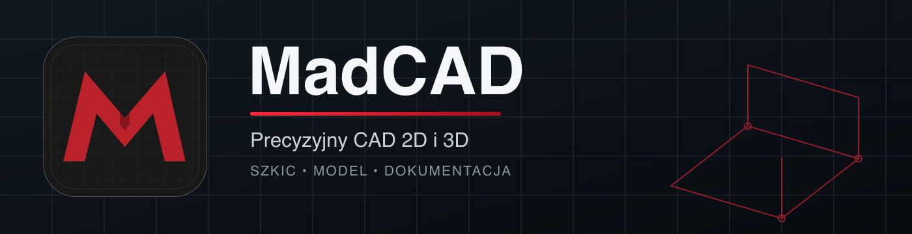

Szkicowanie jak w CAD
Kliknij początek linii, wskaż kierunek kursorem, wpisz długość i zatwierdź Enterem. Alias L uruchamia linię.
MadCAD łączy precyzyjne szkicowanie znane z klasycznego CAD z parametrycznym modelowaniem 3D. Narzędzia druku 3D są opcjonalnym dodatkiem eksportowym. Program działa lokalnie, bez konta i bez aktywacji.

Jedno środowisko do rysowania 2D, historii parametrycznej, operacji bryłowych, kontroli geometrii i eksportu.
Kliknij początek linii, wskaż kierunek kursorem, wpisz długość i zatwierdź Enterem. Alias L uruchamia linię.
Najedź na funkcję, aby poznać działanie i skrót. Polecenia możesz wpisywać bezpośrednio z klawiatury.
Więzy, wymiary sterujące, stabilne referencje i historia operacji pozwalają wrócić do wcześniejszych decyzji.
Extrude, Revolve, Sweep, Loft, operacje Boolean, Shell, otwory, zaokrąglenia i fazy.
Importuj SVG, DXF, STEP, STL i 3MF. Eksportuj dokładny STEP, siatkę STL oraz model 3MF.
Wymieniaj dokładne modele przez STEP. Opcjonalnie sprawdź siatkę, orientację i dopasowanie do stołu przed przekazaniem STL lub 3MF do slicera.
Paczki są budowane i testowane automatycznie na docelowym systemie. Do każdego pliku publikujemy sumę SHA-256.
Instalator EXE z wyborem katalogu, skrótem pulpitu i menu Start.
Pobierz dla WindowsPaczka ZIP dla komputerów Mac z procesorami M1 lub nowszymi.
Pobierz dla macOSMadCAD nie zbiera danych urządzenia i nie wymaga klucza. Przypomnienie informuje o warunkach, a licencję komercyjną potwierdza dokument zakupu.